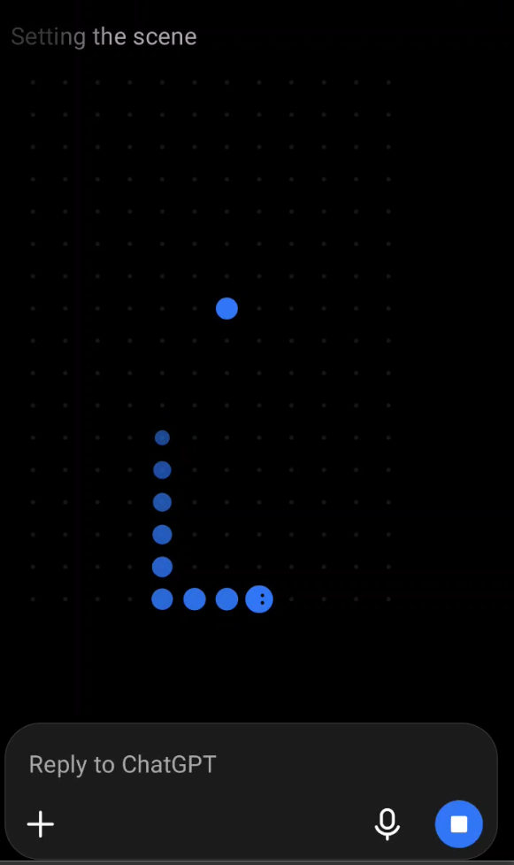
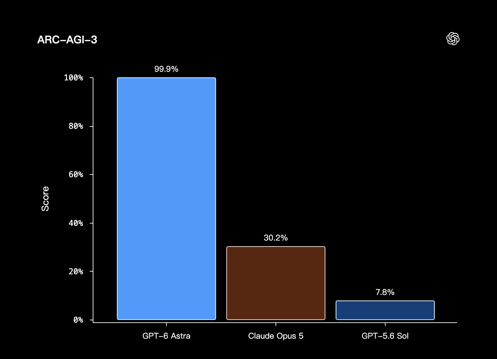

01
生图太快
ChatGPT 可能不到几十秒就完成生成，小游戏的存活窗口先关闭了。
START< 30 SECDONE

ChatGPT 可能不到几十秒就完成生成，小游戏的存活窗口先关闭了。
看屏幕、理解局面、计算动作、再把方向键发回去；一次转向就是一整轮。
每一次转向，Codex 都要重新获取最新情况，再反馈，再给出新的指令。
SNAKE SPEED INCREASES
STATE CHANGES CONTINUOUSLY

ARC-AGI-3 里的小游戏更像静态局面：看清状态，再决定下一步。
状态保持不变，模型可以充分观察、推理，再行动。
模型还在计算时，环境已经连续变化了很多次。
网络延迟、模型计算和工具调用，让高频即时反馈成为明显短板。
能做很久，